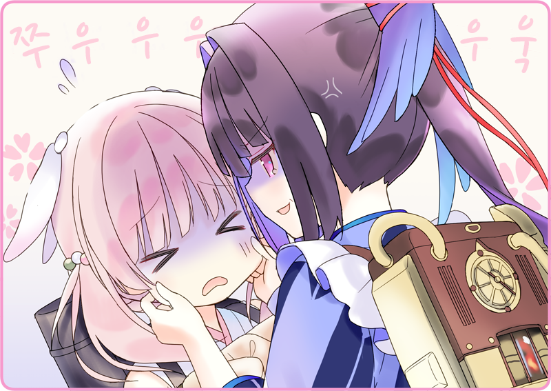

황도 5구.
그 가게는 만국항으로 이어지는 번화가를 조금 벗어난 곳에 있었다.
좀 더 아담한 규모의 가게를 상상했는데, 의외로 크다.
흙벽으로 된 2층 건물에는 본국과 해외의 디자인이 교모하게 섞여 있다. 한때의 부잣집 상가를 빌리고 있는 거겠지.
처마 끝에 걸린 간판에 적혀 있는 '찻집 흑묘정'이라는 글자.

그 아래에서 부들부들 볼이 잡힌 채 고통받는 소녀 인형.
하이자쿠라 「제셩해여어어……!」
하이자쿠라의 볼을 당기고 있는 것은 좀 더 연상 모습인 인형.
뒤로 묶은 머릿결이 젖은 듯이 광택을 내고 있다.
「어, 으음, 그쯤이면 됐지 않을까요」
힘 조절은 되어 있는지 아프지는 않아 보이지만, 일단 그 사이에 끼어들었다.
하이자쿠라 「이, 이쪽 분을 소개할게요. 우사미 씨, 즉, 우사 씨예요!」
「반대지만, 뭐 됐어」
하이자쿠라 「그리고, 이쪽 분은 제 선배인……」
하이자쿠라가 입을 열기 전에, 생긋 미소를 지으며 말했다.
하이자쿠라 「그건 이야기하면 길어지는데요…… 깊고 깊은 사정이 있었거든요」
우물쭈물하면서 손끝을 만지작거린다.
「하이자쿠라가 돈을 흘렸다나 봐요」
하이자쿠라 「뮷!」
「그래서 빵집에서 아르바이트를 하고 있었어요」
하이자쿠라 「뮤뮷!」
「열심히 일해서 보시는 바와 같이 빵을 구해 왔으니 화내지 말아 주세요!」
하이자쿠라 「마, 맞아요! 끝이 좋으면 다 좋은…… 우뮷!」
하이자쿠라 「제셩해여…………!」
눈을 반쯤 뜨고 기가 막히다는 듯이 다시 볼을 부들부들.
하이자쿠라 「모르게써여…… 출발 전에 샤노 짱이랑 놀았을 때는 있었는데여어…!」
카라스바가 손을 확 떼고 처마 끝을 본다.
마침 햇볕이 들고 있는 곳에 몸을 동그랗게 말은 땅딸막한 검은 고양이가 한 마리 있다.
아무래도 이 고양이가 샤노 짱인가 보다.
겨드랑이 아래로 손을 집어넣는다.
살그머니 안아 올리자 칠칠치 못하게 몸을 뻗었다. 아직도 넉살좋게 잠들어 있다.
하이자쿠라 「앗~~~~!」
방금 전까지 자고 있던 곳을 확인하고는 하이자쿠라가 소리를 높였다.
작은 봉투가 그 아래에 깔려 있었다.
하이자쿠라 「돈이에요!」
「하하…… 이런 데 있을 줄이야」
하이자쿠라 「떼끼, 예요~」
하이자쿠라는 훈훈한 미소를 짓고 있다.
하이자쿠라 「우뮷!」
하이자쿠라 「제셩해여……!」
볼이 다시 떡을 빚듯이 빙글빙글 당겨지고 있었다.

 「하~이~자~쿠~라~」
「하~이~자~쿠~라~」